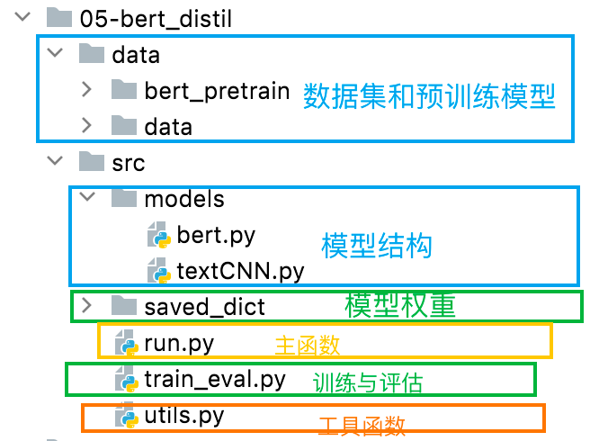
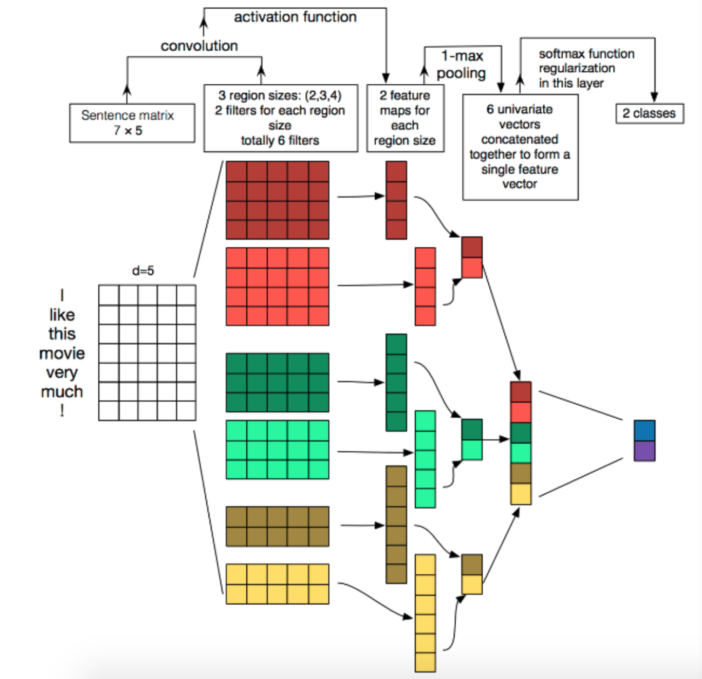
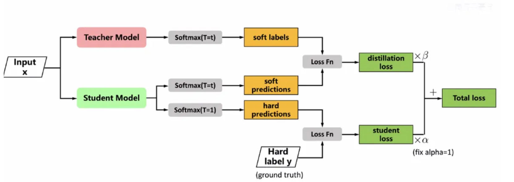
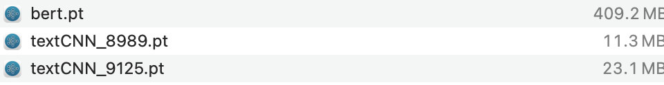

知识蒸馏实践¶
学习目标：
- 掌握知识蒸馏的代码操作.
- 掌握知识蒸馏后模型的性能测试.
1.代码结构¶

2.数据准备¶
该部分的数据和预训练模型与Bert模型章节是一样的，不再赘述。
3.编写工具类函数¶
工具类函数的路径为：
05-bert_distil/src/utils.py
导入工具包如下：
import torch
from tqdm import tqdm
import time
from datetime import timedelta
import os
import pickle as pkl
3.1 工具类函数build_vocab()¶
build_vocab()是位于utils.py中的独立函数，用于将文本数据中的单词映射为索引。函数的主要步骤如下：
- 初始化： 函数开始时定义了三个特殊符号（
UNK,PAD,CLS），它们分别代表未知符号、填充符号和综合信息符号。这些符号在构建词汇表时将被添加。 - 遍历文本文件： 函数通过打开指定路径的文本文件，逐行遍历文件中的内容。每行通常包含一段文本，这里选择每行的第一个字段作为内容。
- 分词和构建词汇表： 对每个内容使用给定的分词器进行分词，然后更新词汇表字典。分词的结果是将文本划分为单词或子词，而词汇表字典则记录了每个单词出现的次数。
- 筛选高频词汇： 对词汇表字典根据词频进行排序，选择出现频率较高的词汇。这里根据参数
min_freq指定的最小出现频率进行筛选。 - 构建最终词汇表： 将选定的高频词汇构建为字典，将每个词汇映射到一个唯一的索引。此外，函数还将特殊符号（
UNK,PAD,CLS）添加到词汇表中，分别赋予它们额外的索引。 - 返回结果： 返回构建好的词汇表字典，其中每个词汇都与一个唯一的索引相关联。这个词汇表后续可用于将文本数据转换为模型可接受的输入形式，即将文本中的每个单词映射为对应的索引。
具体实现如下所示：
UNK, PAD, CLS = "[UNK]", "[PAD]", "[CLS]" # padding符号, bert中综合信息符号
MAX_VOCAB_SIZE = 10000 # 词表长度限制
def build_vocab(file_path, tokenizer, max_size, min_freq):
"""
构建词汇表的函数。
参数：
- file_path (str): 包含文本数据的文件路径。
- tokenizer (function): 用于分词的函数，接受一个字符串并返回分词后的结果。
- max_size (int): 词汇表的最大大小，即保留的词汇数量上限。
- min_freq (int): 词汇表中词语的最小出现频率，低于此频率的词汇将被过滤掉。
返回：
- vocab_dic (dict): 一个字典，将词汇映射到索引的词汇表。
"""
vocab_dic = {} # 用于存储词汇表的字典，键为单词，值为单词出现的次数
with open(file_path, "r", encoding="UTF-8") as f:
for line in tqdm(f):
line = line.strip()
if not line:
continue
content = line.split("\t")[0] # 以制表符分隔的文本，这里取第一列的内容
# 使用给定的分词器（tokenizer）对文本进行分词，并更新词汇表
for word in tokenizer(content):
vocab_dic[word] = vocab_dic.get(word, 0) + 1
# 根据词频对词汇表进行排序，并选择出现频率较高的词汇
vocab_list = sorted([_ for _ in vocab_dic.items() if _[1] >= min_freq],
key=lambda x: x[1], reverse=True)[:max_size]
# 将选定的词汇构建为字典，键为单词，值为索引
vocab_dic = {word_count[0]: idx for idx, word_count in enumerate(vocab_list)}
# 添加特殊符号到词汇表，例如未知符号（UNK）、填充符号（PAD）
vocab_dic.update({UNK: len(vocab_dic), PAD: len(vocab_dic) + 1,CLS: len(vocab_dic) + 2})
return vocab_dic
3.2 工具类函数build_dataset_CNN()¶
build_dataset_CNN()是位于utils.py中的独立函数，用于创建专为text_cnn模型设计的数据集。以下是代码的主要作用：
d_dataset_CNN 的函数，用于创建专为卷积神经网络（CNN）模型设计的数据集。以下是代码的主要作用：
-
分词（Tokenization）：定义了一个简单的字符级分词器，将每个输入文本转换为单个字符的列表。
-
构建词汇表（Vocabulary Building）：
函数首先检查是否存在指定路径 config.vocab_path 下的词汇表文件。如果存在，则加载词汇表；否则，使用训练数据构建新的词汇表。
- 加载数据集（Dataset Loading）：
load_dataset 是 build_dataset_CNN 内部的辅助函数，用于从给定文件（训练、验证、测试）加载数据集。
- 数据集拆分（Dataset Splitting）：
函数通过在相应文件路径上调用 load_dataset 来加载训练、验证和测试的数据集，并返回。
具体实现如下所示：
def build_dataset_CNN(config):
# 定义字符级别分词器
tokenizer = lambda x: [y for y in x]
# 检查是否存在词汇表文件，如果存在则加载，否则构建新的词汇表
if os.path.exists(config.vocab_path):
vocab = pkl.load(open(config.vocab_path, "rb"))
else:
# 构建词汇表
vocab = build_vocab(config.train_path, tokenizer=tokenizer, max_size=MAX_VOCAB_SIZE, min_freq=1)
# 保存词汇表
pkl.dump(vocab, open(config.vocab_path, "wb"))
print(f"Vocab size: {len(vocab)}")
# 定义加载数据集的辅助函数
def load_dataset(path, pad_size=32):
contents = []
with open(path, "r", encoding="UTF-8") as f:
for line in tqdm(f):
lin = line.strip()
if not lin:
continue
content, label = lin.split("\t")
words_line = []
token = tokenizer(content)
seq_len = len(token)
# 填充或截断序列至指定长度
if pad_size:
if len(token) < pad_size:
token.extend([PAD] * (pad_size - len(token)))
else:
token = token[:pad_size]
seq_len = pad_size
# 将词转换为对应的id
for word in token:
words_line.append(vocab.get(word, vocab.get(UNK)))
# 将数据添加到 contents 列表
contents.append((words_line, int(label), seq_len))
return contents # [([...], 0), ([...], 1), ...]
# 加载训练、验证和测试数据集
train = load_dataset(config.train_path, config.pad_size)
dev = load_dataset(config.dev_path, config.pad_size)
test = load_dataset(config.test_path, config.pad_size)
return vocab, train, dev, test
3.3 其他工具类函数¶
其他工具类函数build_dataset(), build_iterator()，get_time_dif()都位于utils.py中的独立函数，这些函数与Bert模型章节是一样的，不再赘述。
4.模型类¶
4.1 Teacher模型¶
Teacher模型采用BERT，接下来实现一个基于BERT的文本分类模型，并包含了相关的配置信息。该部分代码在：
05-bert_distil/src/models/bert.py
主要内容包含：
配置类 Config：和模型类 Model：
首先**导入工具包**：
import torch
import torch.nn as nn
import os
from transformers import BertModel, BertTokenizer, BertConfig
1 实现Config类代码¶
配置类 Config中主要包含以下内容：
Config类包含了用于模型训练和数据处理的各种参数。- 定义了模型名称、数据集路径、训练集、验证集、测试集文件路径、类别名单等信息。
- 包含模型训练结果和量化模型存储结果的路径。
- 配置了训练设备（GPU或CPU）、类别数、epoch数、mini-batch大小、句子长度等。
- BERT预训练模型的路径、分词器、BERT模型配置、隐藏层大小等。
class Config(object):
def __init__(self):
"""
配置类，包含模型和训练所需的各种参数。
"""
self.model_name = "bert" # 模型名称
self.data_path = "/Users/mac/Desktop/投满分项目/03-code/04-bert/data/data1/" #数据集的根路径
self.train_path = self.data_path + "train.txt" # 训练集
self.dev_path = self.data_path + "dev.txt" # 验证集
self.test_path = self.data_path + "test.txt" # 测试集
self.class_list = [x.strip() for x in open(self.data_path + "class.txt").readlines()] # 类别名单
self.save_path = "/Users/mac/Desktop/投满分项目/03-code/04-bert/src/saved_dic" #模型训练结果保存路径
if not os.path.exists(self.save_path):
os.mkdir(self.save_path)
self.save_path += "/" + self.model_name + ".pt" # 模型训练结果
# 模型训练+预测的时候, 放开下一行代码, 在GPU上运行.
self.device = torch.device("cuda" if torch.cuda.is_available() else "cpu")
self.num_classes = len(self.class_list) # 类别数
self.num_epochs = 2 # epoch数
self.batch_size = 128 # mini-batch大小
self.pad_size = 32 # 每句话处理成的长度(短填长切)
self.learning_rate = 5e-5 # 学习率
self.bert_path = "/Users/mac/Desktop/投满分项目/03-code/04-bert/data/bert_pretrain" # 预训练BERT模型的路径
self.tokenizer = BertTokenizer.from_pretrained(self.bert_path) # BERT模型的分词器
self.bert_config = BertConfig.from_pretrained(self.bert_path + '/bert_config.json') # BERT模型的配置
self.hidden_size = 768 # BERT模型的隐藏层大小
2.实现Model类代码¶
**模型类 Model**主要实现以下内容：
Model类继承自nn.Module，实现了一个基于BERT的文本分类模型。- 在初始化方法中，加载预训练的BERT模型和配置，并定义了一个全连接层用于文本分类。
- 在前向传播方法中，通过BERT模型获取句子的表示，然后通过全连接层进行分类
class Model(nn.Module):
def __init__(self, config):
super(Model, self).__init__()
# 预训练BERT模型
self.bert = BertModel.from_pretrained(config.bert_path, config=config.bert_config)
# 全连接层，用于文本分类
self.fc = nn.Linear(config.hidden_size, config.num_classes)
def forward(self, x):
# x: 模型输入，包含句子、句子长度和填充掩码。
context = x[0] # 输入的句子
mask = x[2] # 对padding部分进行mask，和句子一个size，padding部分用0表示，如：[1, 1, 1, 1, 0, 0]
# _是占位符，接收模型的所有输出，而 pooled 是池化的结果,将整个句子的信息压缩成一个固定长度的向量
_, pooled = self.bert(context, attention_mask=mask, return_dict=False)
# 模型输出，用于文本分类
out = self.fc(pooled)
return out
bert.py文件提供了一个简单而灵活的BERT文本分类模型，通过配置类可以方便地调整模型参数，适应不同的文本分类任务，通过model类构建整个网络结构。
4.2 Student模型¶
Student模型采用textCNN，接下来实现一个基于textCNN的文本分类模型，并包含了相关的配置信息。该部分代码在：
05-bert_distil/src/models/textCNN.py
首先看textCNN模型的架构图:

导入相关的工具包：
import torch
import torch.nn as nn
import torch.nn.functional as F
import os
1.实现Config类代码¶
config配置类用于设置存储模型的各种参数和路径。包括数据集的路径、模型保存路径、设备选择、超参数等。
class Config(object):
def __init__(self):
self.model_name = "textCNN"
self.data_path = "/Users/mac/Desktop/投满分项目/03-code/05-bert_distil/data/data/"
self.train_path = self.data_path + "train.txt" # 训练集
self.dev_path = self.data_path + "dev.txt" # 验证集
self.test_path = self.data_path + "test.txt" # 测试集
self.class_list = [x.strip() for x in open(self.data_path+"class.txt", encoding="utf-8").readlines()]
self.vocab_path = self.data_path + "vocab.pkl" # 词表
self.save_path = "/Users/mac/Desktop/投满分项目/03-code/05-bert_distil/src/saved_dict"
if not os.path.exists(self.save_path):
os.mkdir(self.save_path)
self.save_path += "/" + self.model_name + ".pt" # 模型训练结果
self.device = torch.device("cuda" if torch.cuda.is_available() else "cpu") # 设备
self.dropout = 0.5 # 随机失活
self.require_improvement = 1000 # 若超过1000batch效果还没提升，则提前结束训练
self.num_classes = len(self.class_list) # 类别数
self.n_vocab = 0 # 词表大小，在运行时赋值
self.num_epochs = 3 # epoch数
self.batch_size = 128 # mini-batch大小
self.pad_size = 32 # 每句话处理成的长度(短填长切)
self.learning_rate = 1e-3 # 学习率
self.embed = 300 # 字向量维度
self.filter_sizes = (2, 3, 4) # 卷积核的大小
self.num_filters = 256 # 卷积核的数量
2.实现Model类代码¶
TextCNN（卷积神经网络用于文本分类）模型包含词嵌入层、多个卷积核大小的卷积层、池化层、随机失活层和全连接层。其中，卷积层通过不同大小的卷积核捕捉不同范围的文本信息，随机失活层用于防止过拟合，全连接层用于输出最终的分类结果。包含以下三个方法：
__init__方法： 初始化模型。它包括词嵌入层，多个卷积层，池化层，随机失活层和全连接层。conv_and_pool方法： 定义卷积和池化的操作。ReLU激活函数应用于卷积输出，然后通过最大池化层进行池化。forward方法： 定义前向传播逻辑。通过词嵌入层将输入文本序列转换为嵌入表示，然后应用多个卷积核并进行池化。最后，通过全连接层生成最终的分类结果。
具体实现如下：
class Model(nn.Module):
def __init__(self, config):
super(Model, self).__init__()
self.embedding = nn.Embedding(config.n_vocab, config.embed, padding_idx=config.n_vocab - 1) # 词嵌入层
self.convs = nn.ModuleList(
[nn.Conv2d(1, config.num_filters, (k, config.embed)) for k in config.filter_sizes]
) # 卷积层列表，包含不同卷积核大小的卷积层
self.dropout = nn.Dropout(config.dropout) # 随机失活层
self.fc = nn.Linear(config.num_filters * len(config.filter_sizes), config.num_classes) # 全连接层
def conv_and_pool(self, x, conv):
# 卷积和池化操作
x = F.relu(conv(x)).squeeze(3)
x = F.max_pool1d(x, x.size(2)).squeeze(2)
return x
def forward(self, x):
# 前向传播
out = self.embedding(x[0])
out = out.unsqueeze(1)
# 对每个卷积层进行卷积和池化操作，然后拼接在一起
out = torch.cat([self.conv_and_pool(out, conv) for conv in self.convs], 1)
out = self.dropout(out) # 随机失活
out = self.fc(out) # 全连接层
return out
5.编写训练函数,测试函数,评估函数¶
这几个函数共同编写在一个代码文件中:
05-bert_distil/src/train_eval.py
首先导入相关的工具包：
import numpy as np
import torch
import torch.nn as nn
import torch.nn.functional as F
from sklearn import metrics
import time
from utils import get_time_dif
from transformers.optimization import AdamW
from tqdm import tqdm
import math
import logging
在具体实现之前，我们先看下训练的架构图：

以下是模型蒸馏的基本训练步骤：
- 准备教师模型（bert大模型）： 使用一个较大的模型进行训练, 这个模型在任务上表现很好。
- 使用教师模型生成软目标： 对训练数据集进行推理，得到教师模型的输出概率分布（软目标）。这些概率分布包含了模型对每个类别的置信度信息。
- 准备学生模型（textcnn小模型）： 初始化一个较小的模型，这是我们要训练的目标模型。
- 使用软目标和硬标签进行训练： 使用原始的硬标签（实际标签）和教师模型生成的软目标来训练学生模型。损失函数由两部分组成：
- 硬标签损失（通常为交叉熵损失）： 学生模型的输出与实际标签之间的差距。
- 软目标损失： 学生模型的输出与教师模型生成的软目标之间的差距。这通常使用 KL 散度（Kullback-Leibler Divergence）来度量。
- 调整温度参数： KL 散度的计算涉及一个温度参数，该参数可以调整软目标的分布。温度较高会使分布更加平滑。在训练过程中，可以逐渐降低温度以提高蒸馏效果。
通过这个过程，学生模型可以通过教师模型的知识进行训练，达到在小模型上获得类似大模型性能的目的。模型蒸馏在资源受限的环境中特别有用，例如移动设备或边缘设备上。
5.1 获取Teacher网络输出的函数¶
使用Bert作为Teacher模型, 需要用Bert对全部训练数据做预测, 并将结果预先存储进一个list中. 这些预测结果就是soft targets, 未来给Student模型做"学习标签"使用.具体步骤如下所示：
- 将教师模型设置为评估（推断）模式，通过
teacher_model.eval()实现。在评估模式下，模型不会计算梯度，这有助于提高推断速度并减少内存消耗。 - 创建一个空列表
teacher_outputs，用于存储教师模型对训练集每个批次的输出。 - 遍历训练集迭代器
train_iter，对每个批次的数据调用教师模型，获取模型的输出。 - 将每个批次的输出添加到
teacher_outputs列表中。 - 最后，返回包含教师模型对训练集所有批次输出的结果。
具体实现如下所示：
def fetch_teacher_outputs(teacher_model, train_iter):
# 将教师模型设置为评估（推断）模式，避免在获取输出时进行梯度计算
teacher_model.eval()
# 用于存储教师模型对训练集的输出
teacher_outputs = []
# 禁用梯度计算
with torch.no_grad():
# 遍历训练集数据
for i, (data_batch, labels_batch) in enumerate(train_iter):
# 获取教师模型的输出
outputs = teacher_model(data_batch)
# 将输出添加到列表中
teacher_outputs.append(outputs)
# 返回教师模型对训练集的所有输出
return teacher_outputs
需要注意的是Teacher模型和Student模型的DataLoader不是同一个, batch_size和顺序都要保持一致, 才能保证后续的训练样本与soft targets对齐!
5.2 损失函数¶

通常采用的交叉熵损失函数, 有一点需要注意, F.cross_entropy()对输入有限制, 要求label必须是one-hot格式的. 但Teacher网络的输出soft targets是概率分布的形式, 不匹配，因此采用KL散度作为soft targets的loss, 注意: Pytorch中的KL散度函数可以接收概率分布形式的label.包含的步骤是：
-
loss_fn是用于一般的交叉熵损失函数，适用于训练 BERT 模型。 -
criterion是定义 KL 散度损失的 PyTorch 损失类。 -
loss_fn_kd是蒸馏损失函数，用于蒸馏训练。它接受三个参数：outputs（学生模型的输出），labels（真实标签），teacher_outputs（教师模型的输出）。 -
设置两个超参数：
alpha控制软损失和硬损失的权重，T是温度参数，影响软化的程度。 -
计算学生模型（Student）的输出分布值和教师模型（Teacher）的输出分布值。对学生模型的输出进行 log_softmax 处理，对教师模型的输出进行 softmax 处理。
-
计算软损失，即学生模型和教师模型的输出分布之间的 KL 散度损失。
-
计算硬损失，即学生模型和真实标签的交叉熵损失。
-
计算总损失，通过加权软损失和硬损失得到。
具体实现如下所示：
# 交叉熵损失: 训练bert模型
def loss_fn(outputs, labels):
return nn.CrossEntropyLoss()(outputs, labels)
# KL散度损失（要求student输入为log-probabilities,软目标为probabilities）
criterion = nn.KLDivLoss()
# 定义蒸馏损失函数
def loss_fn_kd(outputs, labels, teacher_outputs):
# 设置两个重要超参数
alpha = 0.8
T = 2
# 1.学生网络的带有T参数的log_softmax输出分布
output_student = F.log_softmax(outputs / T, dim=1)
# 2.教师网络的带有T参数的softmax输出分布
output_teacher = F.softmax(teacher_outputs / T, dim=1)
# 3.计算软目标损失,使用KLDivLoss(),第一个参数为student网络输出, 第二个参数为teacher网络输出
soft_loss = criterion(output_student, output_teacher)
# 4.硬目标损失，学生网络的输出概率和真实标签之间的损失, 因为真实标签是one-hot编码, 因此直接使用交叉熵损失即可
hard_loss = F.cross_entropy(outputs, labels)
# 5.计算总损失
# 原始论文中已经证明, 引入T会导致软目标产生的梯度和真实目标产生的梯度相比只有1/(T*T)
# 因此计算完软目标的loss值后要乘以T^2.
KD_loss = soft_loss * alpha * T * T + hard_loss * (1.0 - alpha)
return KD_loss
5.3 Teacher模型训练函数¶
该部分的内容与Bert模型章节的训练函数是类似的，具体步骤包含以下内容：
- 初始化训练开始时间，将模型设置为训练模式。
- 对模型参数进行优化，使用AdamW优化器，同时设置不同参数组的权重衰减。
- 迭代训练，每个epoch内遍历训练集。在每个batch内，进行前向传播、损失计算、反向传播和参数更新。
- 每400个batch，打印一次训练信息，并在验证集上进行评估。判断当前模型是否是最佳模型，如果是则保存。
- 训练完成后，在测试集上进行最终测试。
具体实现如下所示：
def train(config, model, train_iter, dev_iter, test_iter):
"""
参数:
- config: 包含超参数和设置的配置对象。
- model: 要训练的神经网络模型。
- train_iter: 用于训练数据集的迭代器。
- dev_iter: 用于验证（开发）数据集的迭代器。
- test_iter: 用于测试数据集的迭代器。
"""
# 记录训练开始时间
start_time = time.time()
# 将模型设置为训练模式
model.train()
# 获取模型参数
param_optimizer = list(model.named_parameters())
no_decay = ["bias", "LayerNorm.bias", "LayerNorm.weight"]
# 分组参数并设置优化的权重衰减
optimizer_grouped_parameters = [
{
"params": [p for n, p in param_optimizer if not any(nd in n for nd in no_decay)],
"weight_decay": 0.01
},
{
"params": [p for n, p in param_optimizer if any(nd in n for nd in no_decay)],
"weight_decay": 0.0
}]
# 使用AdamW优化器，设置学习率
optimizer = AdamW(optimizer_grouped_parameters, lr=config.learning_rate)
# 记录最佳验证损失
dev_best_loss = float("inf")
# 遍历每个epoch
for epoch in range(config.num_epochs):
total_batch = 0
print("Epoch [{}/{}]".format(epoch + 1, config.num_epochs))
# 遍历训练数据集的每个batch
for i, (trains, labels) in enumerate(tqdm(train_iter)):
# 梯度清零
model.zero_grad()
# 前向传播
outputs = model(trains)
# 计算损失
loss = loss_fn(outputs, labels)
# 反向传播和优化
loss.backward()
optimizer.step()
total_batch += 1
# 每400个batch打印一次训练信息
if total_batch % 400 == 0 and total_batch > 0:
true = labels.data.cpu()
predic = torch.max(outputs.data, 1)[1].cpu()
train_acc = metrics.accuracy_score(true, predic)
# 在验证集上进行评估
dev_acc, dev_loss = evaluate(config, model, dev_iter)
# 检查当前模型是否是最佳模型
if dev_loss < dev_best_loss:
dev_best_loss = dev_loss
# 当模型有提升时保存模型权重
torch.save(model.state_dict(), config.save_path)
improve = "*"
else:
improve = ""
time_dif = get_time_dif(start_time)
msg = "Iter: {0:>6}, Train Loss: {1:>5.2}, Train Acc: {2:>6.2%}, Val Loss: {3:>5.2}, Val Acc: {4:>6.2%}, Time: {5} {6}"
print(msg.format(total_batch, loss.item(), train_acc, dev_loss, dev_acc, time_dif, improve))
# 将模型重新设置为训练模式
model.train()
# 在测试集上测试最终的模型
test(config, model, test_iter)
5.4 知识蒸馏训练函数¶
使用知识蒸馏（Knowledge Distillation）的方式训练深度学习模型的训练函数完成的任务如下所示：
- 初始化优化器和其他训练参数,将CNN模型设置为训练模式，BERT模型设置为评估模式。
- 获取BERT模型的输出，作为教师模型的预测结果。
- 遍历每个epoch，对CNN模型进行训练。计算蒸馏损失（软损失）和交叉熵损失（硬损失）的组合，并进行反向传播和优化。
- 在训练过程中输出训练信息，包括训练损失、准确率以及在验证集上的表现。保存在验证集上表现最好的CNN模型。
- 在训练结束后，使用测试集对最终的CNN模型进行测试。
具体的实现如下所示：
def train_kd(cnn_config, bert_model, cnn_model,
bert_train_iter, cnn_train_iter, cnn_dev_iter, cnn_test_iter):
"""
使用知识蒸馏（Knowledge Distillation）的方式训练模型。
参数:
- cnn_config: 包含CNN模型超参数和设置的配置对象。
- bert_model: BERT模型。
- cnn_model: CNN模型。
- bert_train_iter: 用于BERT模型训练的迭代器。
- cnn_train_iter: 用于CNN模型训练的迭代器。
- cnn_dev_iter: 用于CNN模型验证的迭代器。
- cnn_test_iter: 用于CNN模型测试的迭代器。
"""
# 记录训练开始时间
start_time = time.time()
# 获取CNN模型参数
param_optimizer = list(cnn_model.named_parameters())
no_decay = ["bias", "LayerNorm.bias", "LayerNorm.weight"]
optimizer_grouped_parameters = [
{
"params": [p for n, p in param_optimizer if not any(nd in n for nd in no_decay)],
"weight_decay": 0.01
},
{
"params": [p for n, p in param_optimizer if any(nd in n for nd in no_decay)],
"weight_decay": 0.0
}]
# 使用AdamW优化器，设置学习率
optimizer = AdamW(optimizer_grouped_parameters, lr=cnn_config.learning_rate)
# 记录最佳验证损失
dev_best_loss = float("inf")
# 将CNN模型设置为训练模式
cnn_model.train()
# 将BERT模型设置为评估模式
bert_model.eval()
# 获取BERT模型的输出作为教师模型的预测结果
teacher_outputs = fetch_teacher_outputs(bert_model, bert_train_iter)
# 遍历每个epoch
for epoch in range(cnn_config.num_epochs):
total_batch = 0
print("Epoch [{}/{}]".format(epoch + 1, cnn_config.num_epochs))
# 遍历CNN模型训练数据集的每个batch
for i, (trains, labels) in enumerate(tqdm(cnn_train_iter)):
# 梯度清零
cnn_model.zero_grad()
# 前向传播
outputs = cnn_model(trains)
# 计算蒸馏损失
loss = loss_fn_kd(outputs, labels, teacher_outputs[i])
# 反向传播和优化
loss.backward()
optimizer.step()
total_batch += 1
# 每400个batch打印一次训练信息
if total_batch % 400 == 0 and total_batch > 0:
true = labels.data.cpu()
predic = torch.max(outputs.data, 1)[1].cpu()
train_acc = metrics.accuracy_score(true, predic)
# 在CNN验证集上进行评估
dev_acc, dev_loss = evaluate(cnn_config, cnn_model, cnn_dev_iter)
# 检查当前CNN模型是否是最佳模型
if dev_loss < dev_best_loss:
dev_best_loss = dev_loss
torch.save(cnn_model.state_dict(), cnn_config.save_path)
improve = "*"
else:
improve = ""
time_dif = get_time_dif(start_time)
msg = "Iter: {0:>6}, Train Loss: {1:>5.2}, Train Acc: {2:>6.2%}, Val Loss: {3:>5.2}, Val Acc: {4:>6.2%}, Time: {5} {6}"
print(msg.format(total_batch, loss.item(), train_acc, dev_loss, dev_acc, time_dif, improve))
# 将CNN模型重新设置为训练模式
cnn_model.train()
# 在CNN测试集上测试最终的CNN模型
test(cnn_config, cnn_model, cnn_test_iter)
5.5 评估函数和测试函数¶
评估函数和测试函数的实现与bert章节是一样的，这里不再赘述。
def test(config, model, test_iter):
"""
模型测试函数，用于在测试集上进行最终的模型测试。
参数：
- config: 配置信息对象。
- model: 待测试的模型。
- test_iter: 测试集的数据迭代器。
"""
model.load_state_dict(torch.load(config.save_path,map_location=torch.device(config.device)))
model.eval()
start_time = time.time()
# 调用验证函数计算评估指标
test_acc, test_loss, test_report, test_confusion = evaluate(config, model, test_iter, test=True)
# 打印测试结果信息:输出测试集上的损失、准确率、分类报告和混淆矩阵等信息
msg = "Test Loss: {0:>5.2}, Test Acc: {1:>6.2%}"
print(msg.format(test_loss, test_acc))
print("Precision, Recall and F1-Score...")
print(test_report)
print("Confusion Matrix...")
print(test_confusion)
time_dif = get_time_dif(start_time)
print("Time usage:", time_dif)
def evaluate(config, model, data_iter, test=False):
"""
模型评估函数。
参数：
- config: 配置信息对象。
- model: 待评估的模型。
- data_iter: 数据迭代器。
- test: 是否为测试集评估。
"""
model.eval()
loss_total = 0
# 预测结果
predict_all = np.array([], dtype=int)
# label信息
labels_all = np.array([], dtype=int)
# 不进行梯度计算
with torch.no_grad():
# 遍历数据集
for texts, labels in data_iter:
# 将数据送入网络中
outputs = model(texts)
# 损失函数
loss = F.cross_entropy(outputs, labels)
# 损失和
loss_total += loss
# 获取label信息
labels = labels.data.cpu().numpy()
# 获取预测结果
predic = torch.max(outputs.data, 1)[1].cpu().numpy()
labels_all = np.append(labels_all, labels)
predict_all = np.append(predict_all, predic)
# 计算准确率
acc = metrics.accuracy_score(labels_all, predict_all)
if test:
# 如果是测试集评估，计算分类报告和混淆矩阵
report = metrics.classification_report(labels_all, predict_all, target_names=config.class_list, digits=4)
confusion = metrics.confusion_matrix(labels_all, predict_all)
return acc, loss_total / len(data_iter), report, confusion
else:
# 如果是验证集评估，仅返回准确率和平均损失
return acc, loss_total / len(data_iter)
6.编写运行主函数¶
该部分代码在
05-bert_distil/src/run.py
中，用于训练深度学习模型（BERT或使用知识蒸馏的TextCNN）。具体任务是通过命令行参数 --task 指定的方式进行，可以选择训练BERT模型（trainbert）或者训练使用知识蒸馏的TextCNN模型（train_kd）。
执行过程如下：
- 根据命令行参数选择任务，如果是
trainbert，则加载BERT模型进行训练；如果是train_kd，则加载BERT模型作为教师模型，加载TextCNN模型作为学生模型，进行知识蒸馏训练。 - 初始化相关配置，包括随机种子等。
- 加载数据集，对于
trainbert任务，加载BERT数据集；对于train_kd任务，加载TextCNN的数据集和BERT的训练数据集。 - 加载模型，对于
trainbert任务，加载BERT模型；对于train_kd任务，加载BERT和TextCNN模型。 - 执行训练，对于
trainbert任务，调用train函数；对于train_kd任务，调用train_kd函数。
此脚本的设计使得可以方便地选择不同的任务，并在一个脚本中完成相应模型的训练过程。
具体实现如下所示：
import numpy as np
import torch
from train_eval import train_kd, train
from importlib import import_module
import argparse
from utils import build_dataset, build_iterator, build_dataset_CNN
# 解析命令行参数
parser = argparse.ArgumentParser(description="Chinese Text Classification")
parser.add_argument("--task", type=str, default='train_kd', help="choose a task: trainbert, or train_kd")
args = parser.parse_args()
if __name__ == "__main__":
# 根据任务类型选择不同的模型和配置
if args.task == "trainbert":
model_name = "bert"
x = import_module("models." + model_name) # 动态导入模型
config = x.Config() # 使用模型的配置
# 初始化
np.random.seed(1)
torch.manual_seed(1)
torch.cuda.manual_seed_all(1)
torch.backends.cudnn.deterministic = True # 保证每次结果一样
# 数据集构建
print("Loading data for Bert Model...")
train_data, dev_data, test_data = build_dataset(config) # 构建数据集
train_iter = build_iterator(train_data, config) # 构建数据迭代器
dev_iter = build_iterator(dev_data, config)
test_iter = build_iterator(test_data, config)
# 模型实例化与训练
model = x.Model(config).to(config.device) # 实例化模型，并将模型移动到设备上
train(config, model, train_iter, dev_iter, test_iter)
if args.task == "train_kd":
# 加载bert模型
model_name = "bert"
bert_module = import_module("models." + model_name)
bert_config = bert_module.Config() # 使用BERT模型的配置
# 加载cnn模型
model_name = "textCNN"
cnn_module = import_module("models." + model_name)
cnn_config = cnn_module.Config() # 使用TextCNN模型的配置
# 初始化
np.random.seed(1)
torch.manual_seed(1)
torch.cuda.manual_seed_all(1)
torch.backends.cudnn.deterministic = True # 保证每次结果一样
# 构建bert数据集，因为只需要训练结果作为软目标，这里不需要dev_iter和test_iter
bert_train_data, _, _ = build_dataset(bert_config)
bert_train_iter = build_iterator(bert_train_data, bert_config)
# 构建cnn数据集
vocab, cnn_train_data, cnn_dev_data, cnn_test_data = build_dataset_CNN(cnn_config)
cnn_train_iter = build_iterator(cnn_train_data, cnn_config)
cnn_dev_iter = build_iterator(cnn_dev_data, cnn_config)
cnn_test_iter = build_iterator(cnn_test_data, cnn_config)
cnn_config.n_vocab = len(vocab)
# 加载训练好的teacher模型
bert_model = bert_module.Model(bert_config).to(bert_config.device)
# 加载student模型
cnn_model = cnn_module.Model(cnn_config).to(cnn_config.device)
print("Teacher and student models loaded, start training")
train_kd(bert_config, cnn_config, bert_model, cnn_model,
bert_train_iter, cnn_train_iter, cnn_dev_iter, cnn_test_iter)
6.1 训练Teacher模型¶
执行训练Teacher模型，如下所示：
# 将--task修改为trainbert，直接执行run文件
parser.add_argument("--task", type=str, default='trainbert', help="choose a task: trainbert, or train_kd")
# 或者 直接在命令行运行训练Teacher模型的代码
python run.py --task trainbert
- 输出结果:
Loading data for Bert Model...
180000it [00:37, 4820.80it/s]
10000it [00:02, 4954.00it/s]
10000it [00:02, 4952.50it/s]
Epoch [1/3]
14%|█████████▉ | 200/1407 [02:06<13:26, 1.50it/s]Iter: 200, Train Loss: 0.3, Train Acc: 91.41%, Val Loss: 0.29, Val Acc: 90.86%, Time: 0:02:26 *
28%|███████████████████▉ | 400/1407 [04:44<11:46, 1.43it/s]Iter: 400, Train Loss: 0.34, Train Acc: 90.62%, Val Loss: 0.26, Val Acc: 92.10%, Time: 0:05:07 *
43%|█████████████████████████████▊ | 600/1407 [07:26<09:25, 1.43it/s]Iter: 600, Train Loss: 0.29, Train Acc: 91.41%, Val Loss: 0.25, Val Acc: 92.10%, Time: 0:07:49 *
57%|███████████████████████████████████████▊ | 800/1407 [10:08<07:06, 1.42it/s]Iter: 800, Train Loss: 0.15, Train Acc: 94.53%, Val Loss: 0.22, Val Acc: 92.85%, Time: 0:10:31 *
71%|█████████████████████████████████████████████████ | 1000/1407 [12:50<04:43, 1.44it/s]Iter: 1000, Train Loss: 0.17, Train Acc: 94.53%, Val Loss: 0.22, Val Acc: 93.00%, Time: 0:13:10
No optimization for a long time, auto-stopping...
Test Loss: 0.2, Test Acc: 93.64%
Precision, Recall and F1-Score...
precision recall f1-score support
finance 0.9246 0.9320 0.9283 1000
realty 0.9484 0.9370 0.9427 1000
stocks 0.8787 0.8980 0.8882 1000
education 0.9511 0.9730 0.9619 1000
science 0.9236 0.8950 0.9091 1000
society 0.9430 0.9270 0.9349 1000
politics 0.9267 0.9100 0.9183 1000
sports 0.9780 0.9780 0.9780 1000
game 0.9514 0.9600 0.9557 1000
entertainment 0.9390 0.9540 0.9464 1000
accuracy 0.9364 10000
macro avg 0.9365 0.9364 0.9364 10000
weighted avg 0.9365 0.9364 0.9364 10000
Confusion Matrix...
[[932 10 37 2 5 5 7 1 1 0]
[ 13 937 11 2 4 10 5 5 5 8]
[ 49 12 898 1 19 1 15 0 2 3]
[ 1 1 0 973 0 8 7 0 1 9]
[ 4 4 28 7 895 10 12 2 27 11]
[ 2 8 4 16 5 927 18 1 5 14]
[ 3 8 34 12 9 19 910 0 0 5]
[ 2 3 2 1 1 1 4 978 1 7]
[ 0 2 4 0 24 1 3 1 960 5]
[ 2 3 4 9 7 1 1 12 7 954]]
Time usage: 0:00:19
71%|█████████████████████████████████████████████████ | 1000/1407 [13:29<05:29, 1.24it/s]
- 结论: Teacher模型在测试集上的表现是Test Acc: 93.64%
6.2 训练Student模型¶
设定Config中的重要参数如下:
# 模型迭代3轮
self.num_epochs = 3
# 卷积核尺寸分别选2, 3, 4
self.filter_sizes = (2, 3, 4)
# 卷积核的个数512
self.num_filters = 512
执行run文件
# 将--task修改为train_kd，直接执行run文件
parser.add_argument("--task", type=str, default='train_kd', help="choose a task: trainbert, or train_kd")
# 或直接在命令行运行训练Student模型的代码
python run.py --task train_kd
- 输出结果:
180000it [00:37, 4862.22it/s]
10000it [00:02, 4988.47it/s]
10000it [00:02, 4981.50it/s]
Vocab size: 4762
180000it [00:02, 69598.12it/s]
10000it [00:00, 82889.25it/s]
10000it [00:00, 82326.33it/s]
Data loaded, now load teacher model
Teacher and student models loaded, start training
Epoch [1/20]
14%|█████████▉ | 199/1407 [00:08<00:50, 23.87it/s]Iter: 200, Train Loss: 0.29, Train Acc: 69.53%, Val Loss: 0.85, Val Acc: 82.36%, Time: 0:05:32 *
28%|███████████████████▉ | 400/1407 [00:17<00:42, 23.95it/s]Iter: 400, Train Loss: 0.27, Train Acc: 73.44%, Val Loss: 0.81, Val Acc: 84.00%, Time: 0:05:40 *
43%|█████████████████████████████▊ | 598/1407 [00:25<00:33, 23.86it/s]Iter: 600, Train Loss: 0.24, Train Acc: 83.59%, Val Loss: 0.76, Val Acc: 85.97%, Time: 0:05:49 *
57%|███████████████████████████████████████▊ | 799/1407 [00:34<00:25, 23.91it/s]Iter: 800, Train Loss: 0.23, Train Acc: 83.59%, Val Loss: 0.76, Val Acc: 85.49%, Time: 0:05:58
71%|█████████████████████████████████████████████████ | 1000/1407 [00:43<00:17, 23.89it/s]Iter: 1000, Train Loss: 0.21, Train Acc: 84.38%, Val Loss: 0.74, Val Acc: 85.94%, Time: 0:06:07 *
85%|██████████████████████████████████████████████████████████▊ | 1198/1407 [00:52<00:08, 23.80it/s]Iter: 1200, Train Loss: 0.22, Train Acc: 85.94%, Val Loss: 0.72, Val Acc: 86.92%, Time: 0:06:16 *
99%|████████████████████████████████████████████████████████████████████▌| 1399/1407 [01:01<00:00, 23.85it/s]Iter: 1400, Train Loss: 0.24, Train Acc: 79.69%, Val Loss: 0.72, Val Acc: 86.87%, Time: 0:06:24 *
100%|█████████████████████████████████████████████████████████████████████| 1407/1407 [01:01<00:00, 22.73it/s]
Epoch [2/20]
14%|█████████▊ | 198/1407 [00:08<00:50, 23.95it/s]Iter: 200, Train Loss: 0.23, Train Acc: 85.16%, Val Loss: 0.7, Val Acc: 88.34%, Time: 0:06:33 *
28%|███████████████████▊ | 399/1407 [00:17<00:42, 23.92it/s]Iter: 400, Train Loss: 0.23, Train Acc: 82.81%, Val Loss: 0.68, Val Acc: 88.36%, Time: 0:06:42 *
43%|█████████████████████████████▊ | 600/1407 [00:25<00:33, 24.06it/s]Iter: 600, Train Loss: 0.2, Train Acc: 91.41%, Val Loss: 0.68, Val Acc: 88.26%, Time: 0:06:51 *
57%|███████████████████████████████████████▋ | 798/1407 [00:34<00:25, 23.98it/s]Iter: 800, Train Loss: 0.21, Train Acc: 87.50%, Val Loss: 0.67, Val Acc: 88.83%, Time: 0:07:00 *
71%|█████████████████████████████████████████████████▋ | 999/1407 [00:43<00:17, 23.94it/s]Iter: 1000, Train Loss: 0.19, Train Acc: 91.41%, Val Loss: 0.68, Val Acc: 88.52%, Time: 0:07:09
85%|██████████████████████████████████████████████████████████▊ | 1200/1407 [00:52<00:08, 24.00it/s]Iter: 1200, Train Loss: 0.2, Train Acc: 88.28%, Val Loss: 0.67, Val Acc: 89.07%, Time: 0:07:17 *
99%|████████████████████████████████████████████████████████████████████▌| 1398/1407 [01:00<00:00, 23.81it/s]Iter: 1400, Train Loss: 0.21, Train Acc: 86.72%, Val Loss: 0.67, Val Acc: 88.87%, Time: 0:07:26 *
100%|█████████████████████████████████████████████████████████████████████| 1407/1407 [01:01<00:00, 22.79it/s]
Epoch [3/20]
14%|█████████▊ | 198/1407 [00:08<00:50, 23.90it/s]Iter: 200, Train Loss: 0.22, Train Acc: 85.16%, Val Loss: 0.64, Val Acc: 89.15%, Time: 0:07:35 *
28%|███████████████████▊ | 399/1407 [00:17<00:42, 23.98it/s]Iter: 400, Train Loss: 0.21, Train Acc: 84.38%, Val Loss: 0.64, Val Acc: 89.43%, Time: 0:07:44 *
43%|█████████████████████████████▊ | 600/1407 [00:25<00:33, 24.07it/s]Iter: 600, Train Loss: 0.2, Train Acc: 91.41%, Val Loss: 0.65, Val Acc: 89.54%, Time: 0:07:53
57%|███████████████████████████████████████▋ | 798/1407 [00:34<00:25, 23.95it/s]Iter: 800, Train Loss: 0.2, Train Acc: 88.28%, Val Loss: 0.64, Val Acc: 89.50%, Time: 0:08:01
71%|█████████████████████████████████████████████████▋ | 999/1407 [00:43<00:17, 23.93it/s]Iter: 1000, Train Loss: 0.18, Train Acc: 90.62%, Val Loss: 0.66, Val Acc: 89.14%, Time: 0:08:10
85%|██████████████████████████████████████████████████████████▊ | 1200/1407 [00:52<00:08, 24.03it/s]Iter: 1200, Train Loss: 0.19, Train Acc: 92.97%, Val Loss: 0.65, Val Acc: 89.36%, Time: 0:08:19
99%|████████████████████████████████████████████████████████████████████▌| 1398/1407 [01:00<00:00, 24.01it/s]Iter: 1400, Train Loss: 0.2, Train Acc: 86.72%, Val Loss: 0.65, Val Acc: 89.24%, Time: 0:08:28
No optimization for a long time, auto-stopping...
Test Loss: 0.62, Test Acc: 89.89%
Precision, Recall and F1-Score...
precision recall f1-score support
finance 0.9297 0.8730 0.9005 1000
realty 0.9341 0.9070 0.9203 1000
stocks 0.8183 0.8780 0.8471 1000
education 0.9564 0.9430 0.9496 1000
science 0.8964 0.8220 0.8576 1000
society 0.8359 0.9220 0.8768 1000
politics 0.8920 0.8590 0.8752 1000
sports 0.9436 0.9540 0.9488 1000
game 0.9263 0.9050 0.9155 1000
entertainment 0.8736 0.9260 0.8990 1000
accuracy 0.8989 10000
macro avg 0.9006 0.8989 0.8991 10000
weighted avg 0.9006 0.8989 0.8991 10000
Confusion Matrix...
[[873 9 68 1 6 19 14 3 3 4]
[ 15 907 13 2 4 18 13 6 2 20]
[ 38 24 878 1 18 10 23 2 4 2]
[ 1 2 4 943 4 19 6 5 3 13]
[ 2 3 54 5 822 30 26 2 36 20]
[ 1 14 4 19 6 922 14 1 2 17]
[ 8 8 35 9 11 47 859 5 2 16]
[ 1 1 3 1 3 12 3 954 1 21]
[ 0 0 9 2 37 6 5 15 905 21]
[ 0 3 5 3 6 20 0 18 19 926]]
Time usage: 0:00:00
99%|████████████████████████████████████████████████████████████████████▌| 1398/1407 [01:01<00:00, 22.65it/s]
- 结论: Student模型在测试集上的表现是Test Acc: 89.89%
6.3 调参训练Student模型¶
- 对Config类中的若干超参数做出重要修改:
# 模型迭代30轮
self.num_epochs = 30
# 卷积核尺寸分别选2, 3, 4, 5
self.filter_sizes = (2, 3, 4, 5)
# 卷积核的个数1024
self.num_filters = 1024
- 调参后再次训练Student模型:
# 将--task修改为train_kd，直接执行run文件
parser.add_argument("--task", type=str, default='train_kd', help="choose a task: trainbert, or train_kd")
# 或直接在命令行运行训练Student模型的代码
python run.py --task train_kd
- 输出结果:
180000it [00:37, 4830.81it/s]
10000it [00:02, 4935.57it/s]
10000it [00:02, 4955.57it/s]
Vocab size: 4762
180000it [00:02, 69735.78it/s]
10000it [00:00, 82937.77it/s]
10000it [00:00, 82402.02it/s]
Data loaded, now load teacher model
Teacher and student models loaded, start training
Epoch [1/30]
28%|███████████████████▊ | 399/1407 [00:39<01:40, 10.06it/s]Iter: 400, Train Loss: 0.29, Train Acc: 75.00%, Val Loss: 0.76, Val Acc: 84.65%, Time: 0:06:00 *
57%|███████████████████████████████████████▊ | 800/1407 [01:20<01:00, 10.05it/s]Iter: 800, Train Loss: 0.24, Train Acc: 82.81%, Val Loss: 0.71, Val Acc: 86.89%, Time: 0:06:41 *
85%|██████████████████████████████████████████████████████████▊ | 1200/1407 [02:01<00:20, 10.06it/s]Iter: 1200, Train Loss: 0.23, Train Acc: 82.81%, Val Loss: 0.72, Val Acc: 85.35%, Time: 0:07:22
100%|█████████████████████████████████████████████████████████████████████| 1407/1407 [02:23<00:00, 9.80it/s]
Epoch [2/30]
28%|███████████████████▉ | 400/1407 [00:39<01:40, 10.06it/s]Iter: 400, Train Loss: 0.23, Train Acc: 79.69%, Val Loss: 0.67, Val Acc: 88.46%, Time: 0:08:24 *
57%|███████████████████████████████████████▊ | 800/1407 [01:20<01:00, 10.08it/s]Iter: 800, Train Loss: 0.21, Train Acc: 86.72%, Val Loss: 0.66, Val Acc: 88.74%, Time: 0:09:04 *
85%|██████████████████████████████████████████████████████████▊ | 1199/1407 [02:01<00:20, 10.09it/s]Iter: 1200, Train Loss: 0.21, Train Acc: 92.19%, Val Loss: 0.67, Val Acc: 88.86%, Time: 0:09:45
100%|█████████████████████████████████████████████████████████████████████| 1407/1407 [02:22<00:00, 9.85it/s]
Epoch [3/30]
28%|███████████████████▉ | 400/1407 [00:39<01:39, 10.13it/s]Iter: 400, Train Loss: 0.22, Train Acc: 82.81%, Val Loss: 0.63, Val Acc: 89.46%, Time: 0:10:46 *
57%|███████████████████████████████████████▊ | 799/1407 [01:20<00:59, 10.15it/s]Iter: 800, Train Loss: 0.2, Train Acc: 92.97%, Val Loss: 0.64, Val Acc: 89.56%, Time: 0:11:27
85%|██████████████████████████████████████████████████████████▊ | 1199/1407 [02:00<00:20, 10.15it/s]Iter: 1200, Train Loss: 0.19, Train Acc: 92.19%, Val Loss: 0.64, Val Acc: 89.66%, Time: 0:12:08
100%|█████████████████████████████████████████████████████████████████████| 1407/1407 [02:22<00:00, 9.89it/s]
Epoch [4/30]
28%|███████████████████▉ | 400/1407 [00:39<01:39, 10.17it/s]Iter: 400, Train Loss: 0.19, Train Acc: 90.62%, Val Loss: 0.64, Val Acc: 89.44%, Time: 0:13:08
57%|███████████████████████████████████████▊ | 799/1407 [01:19<00:59, 10.18it/s]Iter: 800, Train Loss: 0.18, Train Acc: 95.31%, Val Loss: 0.62, Val Acc: 89.96%, Time: 0:13:49 *
85%|██████████████████████████████████████████████████████████▊ | 1199/1407 [02:00<00:20, 10.18it/s]Iter: 1200, Train Loss: 0.18, Train Acc: 92.19%, Val Loss: 0.64, Val Acc: 89.69%, Time: 0:14:29
100%|█████████████████████████████████████████████████████████████████████| 1407/1407 [02:21<00:00, 9.92it/s]
Epoch [5/30]
28%|███████████████████▊ | 399/1407 [00:39<01:38, 10.25it/s]Iter: 400, Train Loss: 0.2, Train Acc: 88.28%, Val Loss: 0.63, Val Acc: 89.28%, Time: 0:15:30
57%|███████████████████████████████████████▊ | 799/1407 [01:19<00:59, 10.29it/s]Iter: 800, Train Loss: 0.19, Train Acc: 90.62%, Val Loss: 0.64, Val Acc: 89.60%, Time: 0:16:10
85%|██████████████████████████████████████████████████████████▊ | 1199/1407 [01:59<00:20, 10.29it/s]Iter: 1200, Train Loss: 0.17, Train Acc: 96.88%, Val Loss: 0.64, Val Acc: 89.51%, Time: 0:16:50
100%|█████████████████████████████████████████████████████████████████████| 1407/1407 [02:20<00:00, 10.02it/s]
......
......
......
Epoch [28/30]
28%|███████████████████▉ | 400/1407 [00:38<01:36, 10.40it/s]Iter: 400, Train Loss: 0.15, Train Acc: 98.44%, Val Loss: 0.64, Val Acc: 90.58%, Time: 1:08:43
57%|███████████████████████████████████████▊ | 800/1407 [01:17<00:58, 10.43it/s]Iter: 800, Train Loss: 0.16, Train Acc: 98.44%, Val Loss: 0.63, Val Acc: 91.09%, Time: 1:09:22
85%|██████████████████████████████████████████████████████████▊ | 1200/1407 [01:57<00:19, 10.43it/s]Iter: 1200, Train Loss: 0.15, Train Acc: 96.88%, Val Loss: 0.64, Val Acc: 90.55%, Time: 1:10:02
100%|█████████████████████████████████████████████████████████████████████| 1407/1407 [02:18<00:00, 10.17it/s]
Epoch [29/30]
28%|███████████████████▉ | 400/1407 [00:38<01:36, 10.41it/s]Iter: 400, Train Loss: 0.15, Train Acc: 97.66%, Val Loss: 0.64, Val Acc: 90.78%, Time: 1:11:01
57%|███████████████████████████████████████▊ | 800/1407 [01:17<00:58, 10.42it/s]Iter: 800, Train Loss: 0.16, Train Acc: 98.44%, Val Loss: 0.63, Val Acc: 90.58%, Time: 1:11:40
85%|██████████████████████████████████████████████████████████▊ | 1200/1407 [01:57<00:19, 10.41it/s]Iter: 1200, Train Loss: 0.15, Train Acc: 97.66%, Val Loss: 0.62, Val Acc: 90.72%, Time: 1:12:20
100%|█████████████████████████████████████████████████████████████████████| 1407/1407 [02:18<00:00, 10.17it/s]
Epoch [30/30]
28%|███████████████████▉ | 400/1407 [00:38<01:36, 10.40it/s]Iter: 400, Train Loss: 0.16, Train Acc: 98.44%, Val Loss: 0.65, Val Acc: 90.66%, Time: 1:13:19
57%|███████████████████████████████████████▊ | 800/1407 [01:17<00:58, 10.43it/s]Iter: 800, Train Loss: 0.15, Train Acc: 98.44%, Val Loss: 0.63, Val Acc: 90.79%, Time: 1:13:59
85%|██████████████████████████████████████████████████████████▊ | 1200/1407 [01:57<00:19, 10.40it/s]Iter: 1200, Train Loss: 0.15, Train Acc: 99.22%, Val Loss: 0.64, Val Acc: 90.65%, Time: 1:14:38
100%|█████████████████████████████████████████████████████████████████████| 1407/1407 [02:18<00:00, 10.17it/s]
Test Loss: 0.6, Test Acc: 91.25%
Precision, Recall and F1-Score...
precision recall f1-score support
finance 0.9105 0.9050 0.9077 1000
realty 0.9311 0.9320 0.9315 1000
stocks 0.8912 0.8440 0.8670 1000
education 0.9532 0.9570 0.9551 1000
science 0.8836 0.8730 0.8783 1000
society 0.8306 0.9270 0.8762 1000
politics 0.9041 0.8770 0.8904 1000
sports 0.9733 0.9470 0.9600 1000
game 0.9467 0.9240 0.9352 1000
entertainment 0.9108 0.9390 0.9247 1000
accuracy 0.9125 10000
macro avg 0.9135 0.9125 0.9126 10000
weighted avg 0.9135 0.9125 0.9126 10000
Confusion Matrix...
[[905 10 38 4 5 19 11 3 0 5]
[ 13 932 13 2 3 17 6 3 4 7]
[ 54 23 844 1 32 6 33 1 4 2]
[ 2 2 1 957 4 15 6 1 3 9]
[ 3 5 24 5 873 32 17 3 25 13]
[ 2 15 3 18 5 927 12 0 1 17]
[ 12 10 16 10 14 48 877 2 3 8]
[ 2 0 3 1 2 21 4 947 1 19]
[ 0 0 3 3 43 8 2 5 924 12]
[ 1 4 2 3 7 23 2 8 11 939]]
Time usage: 0:00:01
结论: 调参后的Student模型在测试集上的表现是Test Acc: 91.25%
完成知识蒸馏后, 我们获得了两个模型, Teacher模型和Student模型：

从上述结果中可以看出:
Teacher模型大小为409.2MB, Student模型大小为11.3MB和23.1MB.
Teacher模型测试集准确率为93.64%, Student模型测试集准确率为89.89%和91.25%.
7.结论¶
模型进行知识蒸馏后模型大小和准确率的变化：
1、模型大小明显减少.
- BERT模型409.2MB, 最优的textCNN模型23.1MB.
- 模型大小压缩为原来的5.65%, 缩小了17.7倍.
2、模型在测试集上准确率仅有2.39%的下降.
-
BERT模型准确率93.64%
-
textCNN模型知识蒸馏后30个epochs准确率91.25%